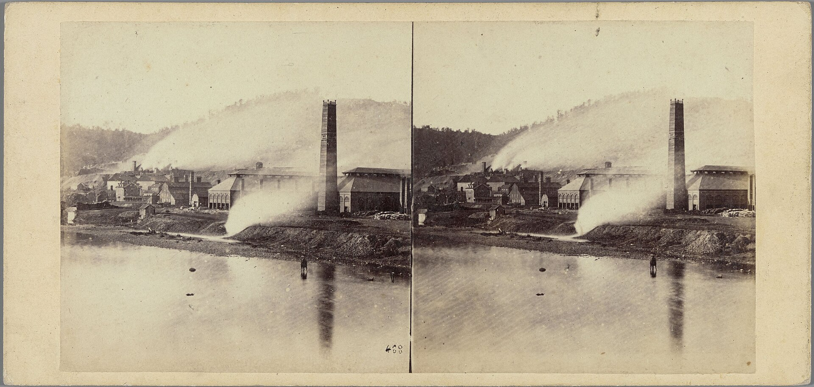

Chapter 5
The Warnings That Came Too Late
The warnings were in the gorge, between the dam and the valley, traveling downstream. They had been traveling for years before the water did. They traveled as letters, as measurements, as professional judgments delivered to men who owned the dam but did not live beneath it. The dam above Johnstown had been modified, lowered, patched, and narrowed. Men who understood water and iron walked its crest. Men who understood law and ownership read their reports. The two groups did not meet.
The first track ran through the Cambria Iron works. John Fulton stood in the rolling mill in 1880 and looked at the river gauge. Fulton was Cambria Iron’s general manager. He had been a miner, a superintendent, a man who understood the ground beneath his feet. The Little Conemaugh ran past the mill. The river rose and fell with the seasons. The gauge told Fulton what the water was doing. He watched it because the mill depended on the river for boiler feedwater. He watched it because the river could flood the lower works. He watched it because fourteen miles upstream, behind an earth dam, sat a reservoir that could send a wall of water down the valley.

Cambria Iron had reason to watch the reservoir. The company’s mills sat on the flat land along the Little Conemaugh. The works employed thousands. The steel rails produced in those mills crossed the continent. The valley below the dam held the works, the town, the railroad yards, and the people. The reservoir above held a lake that covered four hundred and fifty acres. The dam held it back.
Fulton knew the dam’s history. The Commonwealth of Pennsylvania had built it between 1838 and 1853 as a feeder reservoir for the Main Line of Public Works, the state’s cross-state canal system. Johnstown was the eastern terminus of the Western Division Canal, supplied with water by the reservoir at South Fork. The state had abandoned the canal system and sold the reservoir. The reservoir had passed through several owners. In 1879, the South Fork Fishing and Hunting Club bought it. The club’s members were Pittsburgh industrialists. They wanted a lake for fishing and sailing. They wanted a retreat from the city. They got an earth dam that had been built for canal water and reworked for private pleasure.
The club lowered the dam’s crest by three feet to widen the top for a carriage road, reducing its height from the original 72 feet. The club installed a fish screen across the spillway to keep stocked trout from escaping. The screen caught debris. The debris blocked the spillway. The spillway passed less water. The dam held back more. The margin between the lake surface and the dam’s crest shrank. Moreover, a system of relief pipes and valves, a feature of the original dam which had previously been sold off for scrap, was not replaced. The club had no way of lowering the water level in the lake in case of an emergency. The dam’s capacity to withstand a major storm diminished.
A hydraulic analysis published in 2016 confirmed what engineers on the ground had observed. The changes made to the dam by the South Fork Fishing and Hunting Club severely reduced its ability to withstand major storms. Lowering the dam by as much as three feet and failing to replace the discharge pipes meant that the structure could not handle a storm of the magnitude that arrived in May 1889. The analysis used modern hydrological models. The conclusion matched what men with levels and notebooks had seen decades earlier.
The second track ran through the visiting engineers. Men walked the breastwork in the early 1880s. They carried levels. They carried notebooks. They measured the crest. They measured the spillway. They measured the freeboard, the distance between the water’s surface and the dam’s top. They saw what the work crews had done. The crest had been cut. The road had been widened. The spillway had been screened. The discharge pipes that the original builders had installed had been removed or had failed and had not been replaced.
The engineers saw patched masonry. They saw the breastwork where the original stone and timber had been replaced with earth and rubble. They saw the spillway, which the original builders had designed to pass excess water. The spillway had been narrowed. The fish screen clogged. The water had no adequate exit. If the lake rose beyond the spillway’s capacity, the water would reach the crest. If the water reached the crest, it would flow over the top. An earth dam cannot withstand overtopping. The water cuts the embankment. The cut widens. The dam fails.
These observations were not secret. They were not hidden in locked files. They were visible to any engineer who walked the breastwork. They were visible to any man who understood how earth dams behaved. The lowered crest, the narrowed spillway, the fish screen, the missing discharge pipes, the patched breast. These were not subtle defects. They were modifications that changed the dam’s fundamental hydraulic character.
The third track ran through the club’s officers in Pittsburgh. The South Fork Fishing and Hunting Club held its meetings in Pittsburgh. The club’s members included men connected through business and social links to Carnegie Steel and other industrial enterprises. The club elected officers. The officers managed the property. The property included the dam.
The club’s minutes recorded decisions about the dam. The minutes recorded expenditures for repairs. The repairs included patching leaks, clearing the spillway, and work on the embankment. The repairs were responsive. A leak appeared. A crew patched it. The spillway clogged. A crew cleared it. The pattern was reactive. The pattern addressed symptoms. The pattern did not address the dam’s reduced capacity.
The club’s legal form mattered. The South Fork Fishing and Hunting Club was a private corporation. Its members held shares. The club owned the dam and the lake and the land around it. The club’s corporate structure insulated its members from personal liability. If the dam failed, the club’s members were not individually responsible. The corporation owned the dam. The corporation was responsible. The corporation had limited assets. The corporation could not pay for a catastrophe.
This legal structure meant that the dam existed in a regulatory void. The Commonwealth of Pennsylvania had built the dam as a public reservoir. The state had sold it. The state had no inspection program for private dams. No state engineer visited the dam after the sale. No municipal authority had jurisdiction. The dam sat on private land in a sparsely populated area. The nearest town was South Fork, below the dam. The nearest city was Johnstown, fourteen miles downstream. No authority watched the dam. No authority required the club to maintain it. No authority required the club to respond to warnings.
The dam had been built to feed a canal system. The canal system failed. The state sold the reservoir. The reservoir became a private lake. The dam that held the lake had been engineered for a purpose that no longer existed. The club did not need the dam to hold canal water. The club needed the dam to hold a lake. The lake was for pleasure. The dam was scenery.
The warnings traveled through these three tracks. Cambria Iron watched the river. Engineers walked the breastwork. Club officers received reports. The warnings did not converge. They ran parallel. Each track produced knowledge. No track produced authority. Cambria Iron could watch the river but could not order the club to repair the dam. Engineers could measure the crest but could not compel the club to raise it. Club officers could read reports but had no legal duty to act on them.
The gap between knowledge and authority was the central mechanism. The people best positioned to see danger had no power to compel repair. The people with power to repair had no legal duty to act on what they knew. The warnings existed. They existed in letters, in measurements, in professional opinions. They existed in the observations of men who understood water and iron. They did not exist as enforceable orders.
John Fulton represented the first track. Cambria Iron’s general manager had practical reasons to watch the reservoir. The mill sat below the dam. The workers lived below the dam. The railroad ran below the dam. Fulton’s self-interest was structural. If the dam failed, Cambria Iron would lose its mill. The company would lose its workforce. The town would lose its reason to exist.
Fulton corresponded with the club. He raised concerns. He asked about the dam’s condition. He asked about the water level. He asked about the spillway. The club responded. The club said the dam was sound. The club said the water had never reached the crest. The club said repairs had been made. The correspondence was between a manager and a property owner. It was not between a regulator and a regulated entity. Fulton had no authority to compel the club to do anything. He could ask. He could warn. He could write letters. He could not order repairs.
The second track produced its own warnings. Engineers who visited the dam saw the modifications. The lowered crest reduced the freeboard. The narrowed spillway reduced the dam’s capacity to pass floodwater. The fish screen caught debris and reduced the spillway’s effective width. The missing discharge pipes removed a mechanism for lowering the lake in an emergency. The patched breast told engineers that the dam had been leaking. Leaks in an earth dam are serious. Water moving through an embankment carries material. The material exits on the downstream face. The embankment loses mass. The structure weakens.
The engineers who saw these things were professionals. They understood hydraulics. They understood soil mechanics, or what passed for soil mechanics in the 1880s. They understood that an earth dam that overtops will fail. They understood that a spillway that cannot pass the inflow will cause the lake to rise. They understood that a lowered crest reduces the margin between safety and catastrophe. Their professional judgment was that the dam was inadequate.
The third track produced silence. The club’s officers in Pittsburgh received reports. They made decisions about maintenance. The maintenance was reactive. A leak appeared. The club sent a crew. The crew patched the leak. The spillway clogged. The club sent a crew. The crew cleared the spillway. The fish screen stayed. The lowered crest stayed. The missing discharge pipes stayed. The club did not raise the crest. The club did not widen the spillway. The club did not remove the fish screen. The club did not restore the discharge pipes. The club did not hire an engineer to assess the dam’s capacity. The club did not commission a hydraulic study. The club did not do what a public authority would have done.
The asymmetry between the tracks was the warning system’s failure. Cambria Iron produced specific concerns. Engineers produced specific observations. The club produced specific repairs that did not address the specific problems. The warnings were specific. The responses were general. The warnings said the dam’s capacity was reduced. The response was that repairs had been made. The warnings said the spillway was inadequate. The response was that the water had never reached the crest. The warnings said the dam could fail in a major storm. The response was that the dam had held for decades.
The dam had held for decades. It had held because it had not been tested. The original builders had designed it for canal water. The canal system operated intermittently. The reservoir’s water level had been managed. The dam had not been subjected to a major storm while holding a full lake. The club’s modifications reduced the dam’s capacity. The dam continued to hold because no major storm arrived. The dam’s survival was not evidence of its safety. It was evidence of the absence of a test.
The act-of-God defense that emerged after the flood rested on this absence. The storm of May 1889 was extraordinary. The rainfall was heavy. The ground was saturated. The streams were already high. The storm was a natural event. The dam’s failure was not. The dam failed because it had been modified. The modifications reduced its capacity. The storm tested the dam’s capacity. The dam failed the test. The storm was the test. The dam’s condition was the cause.
The 2016 hydraulic analysis confirmed this. The changes made by the South Fork Fishing and Hunting Club severely reduced the dam’s ability to withstand major storms. Lowering the dam by as much as three feet and failing to replace the discharge pipes reduced the margin between the lake’s surface and the dam’s crest. The spillway, narrowed and screened, could not pass the inflow. The water rose. The water reached the crest. The water flowed over the top. The earth embankment eroded. The dam failed. The failure was predictable. It was predicted. The predictions were the warnings.
The warnings existed in the hands of capable men. John Fulton at Cambria Iron had reason to know. The visiting engineers had reason to know. The club’s officers had reason to know. The knowledge was distributed across three tracks. The authority was concentrated in one. The club had the authority to repair. The club had the knowledge that repair was needed. The club did not repair. The club patched. The club responded to symptoms. The club did not address the dam’s reduced capacity.
The deferred-maintenance debt accumulated. Each year without a major storm was a year in which the dam’s defects did not produce consequences. Each year without consequences was a year in which the warnings seemed unnecessary. The dam held. The lake stayed within its banks. The spillway passed ordinary flows. The fish screen caught debris and was cleared. The patches held. The absence of failure was taken as evidence of safety. The warnings were filed. The warnings were not acted upon. The debt grew.
The Absentee Ledger recorded the club’s profits and pleasures. The club’s members enjoyed the lake. They fished. They sailed. They relaxed at the clubhouse. The dam held the lake. The dam was part of the scenery. The dam’s condition was a maintenance issue, not a safety issue. The club treated the dam as a feature of the landscape, not as a structure that could kill. The ledger did not record the warnings. The ledger did not record the dam’s reduced capacity. The ledger did not record the cost of the modifications that had diminished the dam’s ability to withstand a storm.
The ledger recorded what the club spent. The club spent money on repairs. The repairs were real. The repairs addressed leaks and blockages. The repairs did not address the dam’s fundamental problems. The dam’s crest was too low. The spillway was too narrow. The discharge pipes were missing. The fish screen was installed. These were not maintenance issues. These were design failures. The club treated them as maintenance issues. The club’s response was to patch and clear. The club’s response was inadequate. The warnings said so. The warnings were not enforced.
The three tracks ran parallel. Cambria Iron watched the river. Engineers walked the breastwork. Club officers read reports in Pittsburgh. The tracks did not intersect in a way that produced action. Fulton’s letters to the club were correspondence between a concerned neighbor and a property owner. The engineers’ observations were professional opinions without legal force. The club’s decisions were private choices about private property. No authority connected the tracks. No authority translated knowledge into enforcement. No authority required the club to raise the crest, widen the spillway, remove the fish screen, or restore the discharge pipes.
The state’s role had ended when it sold the reservoir. The Commonwealth of Pennsylvania had built the dam. The Commonwealth had inspected it while it was a public reservoir. The Commonwealth had sold it to private owners. The Commonwealth had no inspection program for private dams. The Commonwealth had no mechanism to require private dam owners to maintain their structures. The dam passed from public ownership to private ownership. The dam passed from regulatory oversight to private discretion. The dam’s safety became a private matter.
The town of Johnstown had no jurisdiction over the dam. The dam was in South Fork, fourteen miles upstream. The dam was on private land. The town could not inspect it. The town could not order repairs. The town could not compel the club to do anything. The town’s only recourse was to ask. The town’s representatives could write letters. They could express concern. They could not enforce.
Cambria County had no authority over the dam. The county had no engineer. The county had no inspection program. The county had no mechanism to address private dams. The dam existed in a jurisdictional void. The state had sold it. The municipality could not reach it. The county could not reach it. The club owned it. The club maintained it as it saw fit. The club’s judgment was the only judgment that mattered.
The warnings were legible. The warnings were specific. The warnings came from men who understood water and iron. The warnings said the dam was inadequate. The warnings said the dam’s capacity was reduced. The warnings said the dam could fail in a major storm. They were not vague. They were not general. They were based on observation and measurement. They were based on professional judgment. They were based on the experience of men who worked with water and earth and iron every day.
The warnings failed because they had no mechanism behind them. A warning without enforcement is advice. Advice can be taken. Advice can be ignored. The club ignored the advice. The club did not raise the crest. The club did not widen the spillway. The club did not remove the fish screen. The club did not restore the discharge pipes. The club did not commission a hydraulic study. The club did not hire an engineer to assess the dam’s capacity. The club treated the warnings as correspondence. The club treated the warnings as opinion. The club treated the warnings as the concerns of neighbors who did not understand the dam’s history.
The dam’s history was the club’s defense. The dam had held for decades. The dam had survived storms. The dam had been repaired. The dam was sound. These were the club’s assertions. The assertions were based on the dam’s survival. The dam’s survival was based on the absence of a test. The dam had not been tested by a major storm while holding a full lake under the club’s modifications. The dam’s survival was not evidence of its safety. The dam’s survival was evidence that the test had not yet arrived.
The test arrived on May 31, 1889. The rain fell on May 30 and May 31. The ground was saturated. The streams rose. The lake rose. The spillway could not pass the inflow. The fish screen caught debris. The water reached the crest. The water flowed over the top. The earth embankment eroded. The dam failed at 3: 10 p. m. The water reached Johnstown fifty-seven minutes later.
The warnings had predicted this. Not the specific storm. Not the specific date. Not the specific hour. The warnings had predicted the mechanism. The water would rise. The spillway would not pass the flow. The water would reach the crest. The dam would overtop. The dam would fail. This was the sequence that the engineers described. This was the sequence that the 2016 hydraulic analysis confirmed. This was the sequence that occurred.
The warnings existed. The warnings were in the hands of capable men. The warnings were specific. The warnings were based on observation and measurement and professional judgment. The warnings were not enforced. No authority required the club to act. No authority translated the warnings into orders. No authority connected the knowledge to the power. The gap between knowledge and authority was the space in which the dam failed.
The existence of specific warnings in the hands of capable men, yet without a mechanism for enforcement, creates a pressure of its own. The warnings did not vanish. They sat in letters. They sat in measurements. They sat in professional opinions. They sat in the files of Cambria Iron. They sat in the notebooks of engineers. They sat in the correspondence of the South Fork Fishing and Hunting Club. They were written. They were read. They were discussed. They were not acted upon. They were filed.
The filing was the last act of the warning system. The warnings were placed in files. The files were placed in drawers. The drawers were placed in offices. The offices were in Pittsburgh, in Johnstown, in the homes of engineers. The warnings were preserved. The warnings were not enforced. The warnings waited. The dam waited. The water waited. The gap between knowledge and authority held open. The space was enough for a flood to pass through.